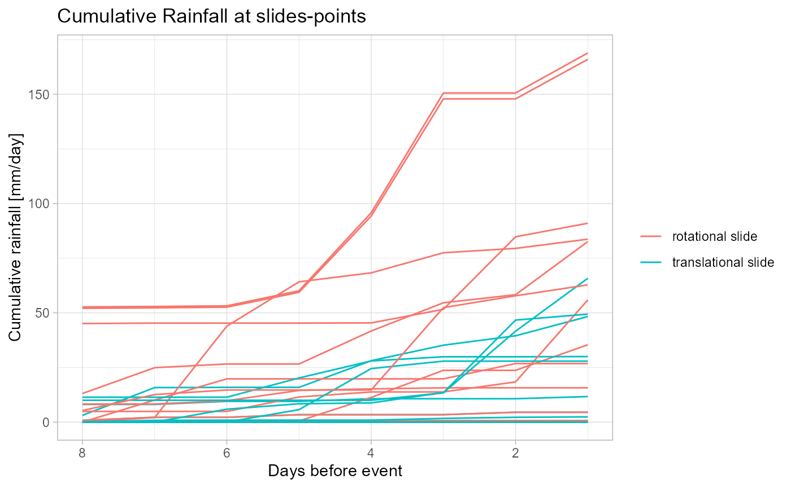
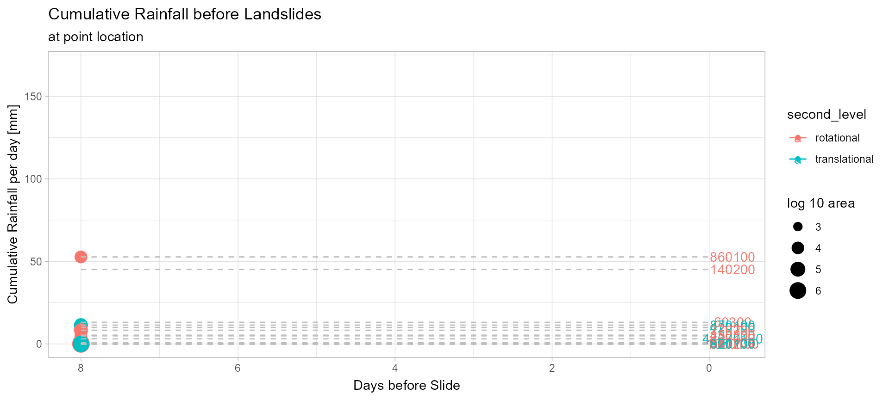

extract_landslide_rainfall.Rmd
# the path to the iffi polygons
landslide_poly_path = "\\\\projectdata.eurac.edu/projects/Proslide/Landslides/Iffi_db_xxxx_to_2018/exportperEurac2020/Shapefiles/IFFI10_5.shp"
# the path to the iffi points
landslide_point_path = "\\\\projectdata.eurac.edu/projects/Proslide/Landslides/Iffi_db_xxxx_to_2018/exportperEurac2020/Shapefiles/IFFI10_1.shp"
# the path to the folder with the iffi-databases
database_dir = "\\\\projectdata.eurac.edu/projects/Proslide/Landslides/Iffi_db_xxxx_to_2018/exportperEurac2020/database"
# the path to the root folder of the gridded rainfall data
path_ncdf = "\\\\projectdata.eurac.edu/projects/Proslide/PREC_GRIDS_updated/"
# load some libraries
library(rainfallR)
library(ggrepel)
library(gganimate)
library(dplyr)
library(ggplot2)
library(iffitoR) # load some sample landslide data that comes with the package
library(sf)
library(raster)
library(forcats)
library(glue)
library(purrr)
library(stringr)
library(crayon) # for some coloursiffitoR-pacakge which facilitates the access to the iffi database a little bit
# only query the data when working under windows due to the RODBC drivers
os = Sys.info()["sysname"]
if (os == "Windows") {
iffi_points = make_shapefile(
database_dir = database_dir,
# normally null only setting it here for me
attribute_database_name = "tbl_frane",
# the name without extension
dictionary_database_name = "diz_frane",
shapefile = landslide_point_path,
# the colums we want to retrieve directly
attri = c("anno_min",
"mese_min",
"giorno_min",
"area"),
# tables to join from the other tables (for more see vignette)
joins = list(
"tbl_frane.Generalita.Cod_tipo" = c(
"diz_frane.diz_tipo_movi.cod_tipo",
"diz_frane.diz_tipo_movi.tipologia"
),
"tbl_frane.clas_ii_liv.movimento" = c(
"diz_frane.diz_movimenti.movimento",
"diz_frane.diz_movimenti.nome_movimento"
),
"tbl_frane.ass_gen_cause.causa" = c(
"diz_frane.diz_cause.causa",
"diz_frane.diz_cause.nome_causa"
)
)
)
}
# what have we got
dplyr::glimpse(iffi_points)
#> Rows: 8,919
#> Columns: 9
#> $ PIFF_ID <dbl> 20100, 30100, 30200, 30300, 30400, 30500, 30600, 401...
#> $ anno_min <int> 1967, 1993, 1999, 1999, 2009, 2012, NA, NA, NA, 2011...
#> $ mese_min <int> 1, 9, 1, NA, 5, 4, NA, NA, NA, 1, NA, 8, 2, NA, 2, 2...
#> $ giorno_min <int> 1, 25, NA, NA, NA, 23, NA, NA, NA, 10, NA, 7, 11, NA...
#> $ area <int> 272156, 0, 0, 83566, 0, 0, 0, NA, 57402, 0, 0, 0, 0,...
#> $ tipologia <chr> "Complesso", "Aree soggette a crolli/ribaltamenti di...
#> $ nome_movimento <chr> "Complesso", "Aree soggette a crolli/ribaltamenti di...
#> $ nome_causa <chr> "n.d.", "n.d.", "superfici di taglio preesistenti", ...
#> $ geometry <POINT [m]> POINT (726753.9 5210405), POINT (669896.9 5122...the time information is in the columns anno_min, mese_min and giorno_min
the first and second level are still in italian, wo do some more preprocessing
if (os == "Windows") {
# translate the two classifying columns to english
iffi_points_1 = iffitoR::translate_iffi(iffi_points)
# get some more date information
iffi_points_2 = iffitoR::get_date_information(iffi_points_1)
# drop the geometry, so that it gets a little more space
iffi_points_2 %>% st_drop_geometry() %>% dplyr::select(c(matches("date|day|year|month|first|second"))) %>% head()
}
#>
#> Added the columns:
#>
#> date_info (chr) - (eiher 'year', 'month', 'day' or 'no date')
#> year.int (integer)
#> month.int (integer)
#> day.int (integer)
#> year.posix (date) (object of class date, referenced to the 1st of January of the year)
#> first_level second_level year_present
#> 1 complex complex TRUE
#> 2 area subject to rockfall/topple area subject to rockfall/topple TRUE
#> 3 fall-type/topple fall-type TRUE
#> 4 fall-type/topple fall-type TRUE
#> 5 fall-type/topple fall-type TRUE
#> 6 fall-type/topple fall-type TRUE
#> month_present day_present date_info date year.int month.int day.int
#> 1 TRUE TRUE day 1967-01-01 1967 1 1
#> 2 TRUE TRUE day 1993-09-25 1993 9 25
#> 3 TRUE FALSE month <NA> 1999 1 NA
#> 4 FALSE FALSE year <NA> 1999 NA NA
#> 5 TRUE FALSE month <NA> 2009 5 NA
#> 6 TRUE TRUE day 2012-04-23 2012 4 23
#> year.posix
#> 1 1967-01-01
#> 2 1993-01-01
#> 3 1999-01-01
#> 4 1999-01-01
#> 5 2009-01-01
#> 6 2012-01-01#> [1] 209 17We want to extract the rainfall data for each of the 209 points
We not only want the rainfall at the day of occurence, but also the 7 days before the actualy event happended
As we have one raster per day and one raster covers the entire province of South Tyrol, we will make a list of all the events that happened on the same day. This will prevent us of extracting the same raster twice
The names of the list will be the dates. Each day will have a dataframe with one row per event
# now lets use the data that comes already preprocessed with the iffitoR package
# we need to filter the right slides as we did above for the data queried from the databse
landsld = landsld %>%
filter(str_detect(second_level, "translational|rotational")) %>%
filter(date_info == "day") %>%
filter(year.int >= 1980)
# create the list for the events on the same day
slides_same_day = list()
for (row in 1:nrow(landsld)) {
# get the day of the event
dts = landsld[row,][["date"]]
dts_chr = as.character(dts) %>% str_replace_all(., "-", "")
# add this spatial object to the list with the name being the day
if(dts_chr %in% names(slides_same_day)){
slides_same_day[[dts_chr]] = rbind(slides_same_day[[dts_chr]], landsld[row,])
} else{
slides_same_day[[dts_chr]] = landsld[row, ]
}
}
# create a vector of the slides per day
n_slides_per_day = sapply(slides_same_day, nrow)
# what is the max slides per day
m = max(n_slides_per_day)
# when did it happen
n_slides_per_day[n_slides_per_day == m]
#> 20080711
#> 16for each day (each element in the list above) we now extract the rainfall data
therefore we use the rainfallR-package and its simple functions
We essentially extract the right raster from a bunch of NetCDf-files and extract then the raster-value (the rainfall) under the point of consideration
According to the implementation of rainfallR on the days with only one slide we get back a simple dataframe per day (yet in the wrong format that will be re-formatted with the make_cumulative_rainfall-function). When we extract data for more than one slide per day, we also get back a dataframe per say in a little different format and witch a unique identifier per slide
The rainfallR-function was intended to work with multiple days. However, it only supports the extracting of one spatial object (be it multiple points or polygons per day). Here however, we we want to extract the rainfall for various different days for different spatial objects. So we need to write a for loop
let see how long the extraction for all the 762 slides takes
# lets only take a smaller subset
slides_same_day = slides_same_day[1:20]
# for each day get the rainfall at the slide location
out = vector("list", length=length(slides_same_day))
# measure the time
start = Sys.time()
# iterate over the spatial object
for (i in seq_along(slides_same_day)) {
# print some informative message
n = length(slides_same_day)
str = paste0(i, "/", n)
dashes = paste0(replicate(20, "-"), collapse = "")
cat(yellow$bold$underline("\n------------", str, dashes, "\n\n"))
# get the date of the slides
# this is one of the inputs to the function
dts = names(slides_same_day)[[i]] %>% as.Date(., "%Y%m%d")
# the spatial object
# another input
spatial.obj = slides_same_day[[i]]
# some other arguments
days_back =7
seqq = FALSE # we only consider one day per slides (not considering the days back)
rf = invisible(rainfallR::get_rainfall(
spatial.obj = spatial.obj,
dts = dts,
seqq = seqq,
days_back = days_back
))
# there can only be one list element as we extract data for one day each
out[[i]] = rf
}
end = Sys.time()
took=end-startSo the extraction took: 1.30466408332189 minutes
First we bring each element of the result-list (which are also lists) in a long format. This means, if there would be more dates in the parameter dts, there would be more dataframes in the most inner list that would be converted to long format. Here it is only one.
# will bring each dataframe in a "long" fomat
out_long_dfs = map(out, function(x) {rainfallR::make_cumulative_rainfall(res = x, days_back=days_back)})
# one column with the cumulative sum (cumsum) and one with the dates and also an integer
# column with the dates before the event
head(out_long_dfs[[1]])
#> $`20140211`
#> Simple feature collection with 16 features and 22 fields
#> geometry type: POINT
#> dimension: XY
#> bbox: xmin: 671300.8 ymin: 5123189 xmax: 697736.7 ymax: 5169464
#> CRS: +proj=utm +zone=32 +ellps=WGS84 +units=m +no_defs
#> # A tibble: 16 x 23
#> # Groups: id [2]
#> id PIFF_ID area tipologia nome_movimento nome_causa first_level
#> * <int> <dbl> <int> <chr> <chr> <chr> <chr>
#> 1 1 6.03e4 0 translat~ rotational <NA> translatio~
#> 2 1 6.03e4 0 translat~ rotational <NA> translatio~
#> 3 1 6.03e4 0 translat~ rotational <NA> translatio~
#> 4 1 6.03e4 0 translat~ rotational <NA> translatio~
#> 5 1 6.03e4 0 translat~ rotational <NA> translatio~
#> 6 1 6.03e4 0 translat~ rotational <NA> translatio~
#> 7 1 6.03e4 0 translat~ rotational <NA> translatio~
#> 8 1 6.03e4 0 translat~ rotational <NA> translatio~
#> 9 2 4.27e7 646 translat~ translational precipita~ translatio~
#> 10 2 4.27e7 646 translat~ translational precipita~ translatio~
#> 11 2 4.27e7 646 translat~ translational precipita~ translatio~
#> 12 2 4.27e7 646 translat~ translational precipita~ translatio~
#> 13 2 4.27e7 646 translat~ translational precipita~ translatio~
#> 14 2 4.27e7 646 translat~ translational precipita~ translatio~
#> 15 2 4.27e7 646 translat~ translational precipita~ translatio~
#> 16 2 4.27e7 646 translat~ translational precipita~ translatio~
#> # ... with 16 more variables: second_level <chr>, year_present <lgl>,
#> # month_present <lgl>, day_present <lgl>, date_info <chr>, date <date>,
#> # year.int <int>, month.int <int>, day.int <int>, year.posix <date>,
#> # date_consid <chr>, date.1 <chr>, precip <dbl>, geometry <POINT [m]>,
#> # cumsum <dbl>, days_before_event <int>As we can see each the output still is a list of lists. Each inner list could potentially have many dataframes (one for each date in the parameter dts). As we only consider one date here, it is a list of lists where each inner list only has one dataframe.
We thus can extract for each element of the inner list the first argument
In case we would not have the iffi-index for each slide we would need some way to uniquely distinguish the slides as each list element can potentially have more than one slide (look at the IDs). We will do this by iterating over the list and change the unique id in each dataframe to an entirely unique id in the list
# so we exrtact the first (and only) element of each list
out_simple_list = map(out_long_dfs, ~.x[[1]])
### create unique id for each slide
# get the first and already create the new id
out_unique_slide = out_simple_list[[1]] %>%
mutate(id = paste0(1, "_", id))
# loop over the others and use the counter variable as additional identifier
for (i in seq_along(out_simple_list)) {
# dont do it for the first one
if(!i==1){
df = out_simple_list[[i]] %>%
mutate(id = paste0(i, "_", id))
out_unique_slide = rbind(out_unique_slide, df)
}
}As we have this new id we can now plot each slide or by the iffi-kodex or by the id
Now we can proceed to plot the data in order to better understand it and at the same time also perform a first validation of the data
ggplot(out_unique_slide) +
geom_line(aes(x = days_before_event, y = cumsum, group=id, col=second_level)) +
scale_x_reverse()
# create an upcounting couter
out_unique_slide %>%
group_by(id) %>%
filter(!is.na(area)) %>%
mutate(time_anim = row_number()) %>%
mutate(area = log10(area)) %>%
ggplot(., aes(x=days_before_event, y=cumsum, group=id, col=second_level), lwd=2) +
geom_line() +
geom_point(aes(size=area)) +
scale_x_reverse() +
geom_segment(aes(xend=0, yend=cumsum), linetype=2, colour="grey") +
geom_text(aes(x = -0.3, label=PIFF_ID)) +
theme_light() +
labs(title="Cumulative Rainfall before Landslides",
subtitle = "at point location",
x = "Days before Slide",
y = "Cumulative Rainfall per day [mm]",
size = "log 10 area ") +
transition_reveal(time_anim)
#> Warning in sqrt(x): NaNs wurden erzeugt
#> Warning: Removed 4 rows containing missing values (geom_point).
#> Warning: Removed 4 rows containing missing values (geom_point).
#> Warning: Removed 4 rows containing missing values (geom_point).
#> Warning: Removed 4 rows containing missing values (geom_point).
#> Warning: Removed 4 rows containing missing values (geom_point).
#> Warning: Removed 4 rows containing missing values (geom_point).
#> Warning: Removed 4 rows containing missing values (geom_point).
#> Warning: Removed 4 rows containing missing values (geom_point).
#> Warning: Removed 4 rows containing missing values (geom_point).
#> Warning: Removed 4 rows containing missing values (geom_point).
#> Warning: Removed 4 rows containing missing values (geom_point).
#> Warning: Removed 4 rows containing missing values (geom_point).
#> Warning: Removed 4 rows containing missing values (geom_point).
#> Warning: Removed 4 rows containing missing values (geom_point).
#> Warning: Removed 4 rows containing missing values (geom_point).
#> Warning: Removed 4 rows containing missing values (geom_point).
#> Warning: Removed 4 rows containing missing values (geom_point).
#> Warning: Removed 4 rows containing missing values (geom_point).
#> Warning: Removed 4 rows containing missing values (geom_point).
#> Warning: Removed 4 rows containing missing values (geom_point).
#> Warning: Removed 4 rows containing missing values (geom_point).
#> Warning: Removed 4 rows containing missing values (geom_point).
#> Warning: Removed 4 rows containing missing values (geom_point).
#> Warning: Removed 4 rows containing missing values (geom_point).
#> Warning: Removed 4 rows containing missing values (geom_point).
#> Warning: Removed 4 rows containing missing values (geom_point).
#> Warning: Removed 4 rows containing missing values (geom_point).
#> Warning: Removed 4 rows containing missing values (geom_point).
#> Warning: Removed 4 rows containing missing values (geom_point).
#> Warning: Removed 4 rows containing missing values (geom_point).
#> Warning: Removed 4 rows containing missing values (geom_point).
#> Warning: Removed 4 rows containing missing values (geom_point).
#> Warning: Removed 4 rows containing missing values (geom_point).
#> Warning: Removed 4 rows containing missing values (geom_point).
#> Warning: Removed 4 rows containing missing values (geom_point).
#> Warning: Removed 4 rows containing missing values (geom_point).
#> Warning: Removed 4 rows containing missing values (geom_point).
#> Warning: Removed 4 rows containing missing values (geom_point).
#> Warning: Removed 4 rows containing missing values (geom_point).
#> Warning: Removed 4 rows containing missing values (geom_point).
#> Warning: Removed 4 rows containing missing values (geom_point).
#> Warning: Removed 4 rows containing missing values (geom_point).
#> Warning: Removed 4 rows containing missing values (geom_point).
#> Warning: Removed 4 rows containing missing values (geom_point).
#> Warning: Removed 4 rows containing missing values (geom_point).
#> Warning: Removed 4 rows containing missing values (geom_point).
#> Warning: Removed 4 rows containing missing values (geom_point).
#> Warning: Removed 4 rows containing missing values (geom_point).
#> Warning: Removed 4 rows containing missing values (geom_point).
#> Warning: Removed 4 rows containing missing values (geom_point).
#> Warning: Removed 4 rows containing missing values (geom_point).
#> Warning: Removed 4 rows containing missing values (geom_point).
#> Warning: Removed 4 rows containing missing values (geom_point).
#> Warning: Removed 4 rows containing missing values (geom_point).
#> Warning: Removed 4 rows containing missing values (geom_point).
#> Warning: Removed 4 rows containing missing values (geom_point).
#> Warning: Removed 4 rows containing missing values (geom_point).
#> Warning: Removed 4 rows containing missing values (geom_point).
#> Warning: Removed 4 rows containing missing values (geom_point).
#> Warning: Removed 4 rows containing missing values (geom_point).
#> Warning: Removed 4 rows containing missing values (geom_point).
#> Warning: Removed 4 rows containing missing values (geom_point).
#> Warning: Removed 4 rows containing missing values (geom_point).
#> Warning: Removed 4 rows containing missing values (geom_point).
#> Warning: Removed 4 rows containing missing values (geom_point).
#> Warning: Removed 4 rows containing missing values (geom_point).
#> Warning: Removed 4 rows containing missing values (geom_point).
#> Warning: Removed 4 rows containing missing values (geom_point).
#> Warning: Removed 4 rows containing missing values (geom_point).
#> Warning: Removed 4 rows containing missing values (geom_point).
#> Warning: Removed 4 rows containing missing values (geom_point).
#> Warning: Removed 4 rows containing missing values (geom_point).
#> Warning: Removed 4 rows containing missing values (geom_point).
#> Warning: Removed 4 rows containing missing values (geom_point).
#> Warning: Removed 4 rows containing missing values (geom_point).
#> Warning: Removed 4 rows containing missing values (geom_point).
#> Warning: Removed 4 rows containing missing values (geom_point).
#> Warning: Removed 4 rows containing missing values (geom_point).
#> Warning: Removed 4 rows containing missing values (geom_point).
#> Warning: Removed 4 rows containing missing values (geom_point).
#> Warning: Removed 4 rows containing missing values (geom_point).
#> Warning: Removed 4 rows containing missing values (geom_point).
#> Warning: Removed 4 rows containing missing values (geom_point).
#> Warning: Removed 4 rows containing missing values (geom_point).
#> Warning: Removed 4 rows containing missing values (geom_point).
#> Warning: Removed 4 rows containing missing values (geom_point).
#> Warning: Removed 4 rows containing missing values (geom_point).
#> Warning: Removed 4 rows containing missing values (geom_point).
#> Warning: Removed 4 rows containing missing values (geom_point).
#> Warning: Removed 4 rows containing missing values (geom_point).
#> Warning: Removed 4 rows containing missing values (geom_point).
#> Warning: Removed 4 rows containing missing values (geom_point).
#> Warning: Removed 4 rows containing missing values (geom_point).
#> Warning: Removed 4 rows containing missing values (geom_point).
#> Warning: Removed 4 rows containing missing values (geom_point).
#> Warning: Removed 4 rows containing missing values (geom_point).
#> Warning: Removed 4 rows containing missing values (geom_point).
#> Warning: Removed 4 rows containing missing values (geom_point).
#> Warning: Removed 4 rows containing missing values (geom_point).
#> Warning: Removed 4 rows containing missing values (geom_point).
#> Warning: Removed 4 rows containing missing values (geom_point).